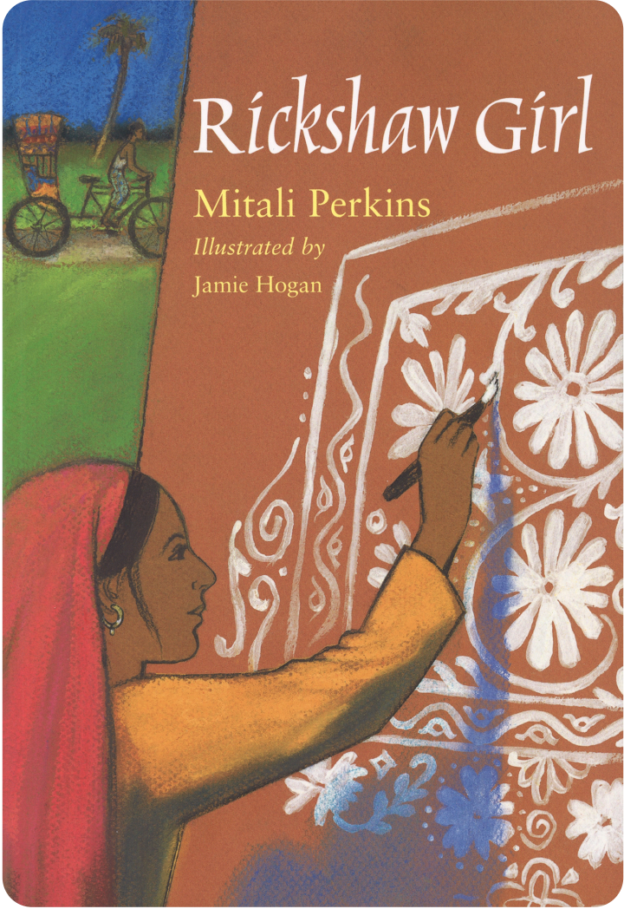

Joe and Cody are two Cree brothers camping with their parents in the far northern lakes of Manitoba, where their closest friends are the sticks, rocks, and wildlife of the Canadian wilderness.
"Highway's text has a graceful simplicity, evoking the deep pleasure of brothers at play in a serene, remote setting. Flett's art enhances those qualities . . . The elegant page design cleanly incorporates the English and Cree texts."
— Horn Book Magazine
Recommended by Social Justice Books, a Teaching for Change Project
Hooks
Build Background
To Build Background, use the links below to introduce and discuss the terms used in Canada for indigenous people as well as the role indigenous people are taking in conserving and protecting wild lands in Canada.
Write the words “indigenous” and “Canada” on chart paper. As needed, identify Canada on a map of North America. Tell students that the first video explains who the indigenous people of Canada are.
Add the words “conserve” on the chart paper. Discuss the meaning: to protect and keep safe from loss or destruction. Explain that the second video describes how important conservation of nature is to indigenous people in Canada.
Before students view the videos, have them think about what they already know about indigenous people in the United States or Canada. Preview all links and content before sharing with students.
In this video from the Canadian Broadcast Corporation (CBC), cartoon hosts explain what the word “indigenous” means and how it applies to people in Canada. Set a purpose for viewing by encouraging students to listen for what indigenous means and who the indigenous people are.
Ask: What does “indigenous” mean? (originating or occurring naturally in a particular place) Which people in Canada are First Nation? (Examples: The Algonquin, the Cree, Haida, Mohawk, and Ojibwe) What are some terms for indigenous people in the United States that you might be familiar with? (Example: “Native American” or “American Indian”)
In this video, the importance to indigenous people of conserving and protecting the natural world is highlighted. Set a purpose for viewing by having students write what they notice and wonder about how important nature is to indigenous people.
As needed, preview the meanings of the following terms that appear in the video: “conserve,” “conservation,” “guardian,” “ecosystems,” and “species.” After viewing, continue having students review and discuss their notes with a partner. Encourage students to sort and group similar ideas. Then, lead a whole class discussion.
Ask: How does the video show the importance of the natural world to indigenous people in Canada?
Introduce the Big Question
Why is it important to respect and connect with nature?
Write the Big Question on chart paper and have students brainstorm ideas about what it means to respect and connect with nature. Ask students to think about ways that they or people they know connect with, or experience nature. Have each student write three ideas on sticky notes. Prompt students by sharing some examples of your own, such as “walking in a park,” “watching birds,” or “swimming in a lake.”
For students who may not have had much experience in outdoor, wilderness spaces, suggest that they think of more accessible, everyday examples, such as “listening to rain,” “playing in the snow,” or “watching nature shows online or on television.”
Have students work with partners to discuss their ideas and compare their sticky notes, adding additional examples as they talk. Encourage pairs to group and sort their ideas into similar categories. Then discuss students’ ideas with the class, sort similar sticky notes on the board. Use some of the ideas to start a web showing students’ examples.
[word web with text inside circles and lines connecting the circles]
[center circle:] ways to connect with nature
[circle 1:] swim in a lake
[circle 2:] watch birds
[circle 3:] walk in a park
[circle 4:] ?
Have students work with new partners and discuss examples from the word web. Use sentence frames such as the ones below to prompt partners’ discussion:
One way I connect with nature is ______________ .
Another way I would like to try is ____________ .
Respecting and connecting with nature is important because ____________ .
Tell students that they will continue to explore the Big Question as they read Dragonfly Kites.
Mirrors & Windows
Four Corners: Quotes about Nature
Display one of the four quotes below in each corner of the room. Explain that the indigenous cultures in North America have always valued and respected their connection to nature. Point out that each of the quotes is attributed to an indigenous person or group. Read each quote aloud and tell students to think about how it reflects (or does not reflect) their ideas about respecting and connecting with nature.
“Take only what you need and leave the land as you found it.” — Arapaho Nation
“When we show our respect for other living things, they respond with respect for us.” — Arapaho proverb
“The woods, the streams, everything on it belongs to everybody and is for the use of all.”— Massasoit, Wampanoag leader
“One should pay attention to even the smallest crawling creature for these too may have a valuable lesson to teach us.”—Black Elk, Lakota elder
Then have students move to the corner of the room displaying their favorite quote. Allow time for group discussion before facilitating a whole-class discussion. See Activity Support for further instructions.
Write About It!
Journal Display the sentence frame below and have students write their ideas about nature. Explain that students will revisit their responses after they read each part of the story.
To me, it is important to respect and connect with nature because _______ .
Display the following student exemplars for students to use as guideposts with their writing.
Student Exemplars:
“To me, it is important to respect and connect with nature because connecting with nature keeps me calm and happy.”
“To me, it is important to respect and connect with nature because it helps us learn to protect our planet.”
Author’s Craft
Setting The northern Manitoba wilderness is a central element in Tomson Highway’s story. The author uses details of the setting to develop important themes about people’s connection with nature. Use the Activity Support to guide students to identify how Tomson Highway establishes and describes the setting of this story.
Summary
Joe and Cody are Cree brothers who live in the far north of Canada. Their summer home is a tent. Each summer the boys and their parents stay in a different spot on the hundreds of lakes and islands in northern Manitoba. There are no other people in this wilderness—just the brothers, mama and papa, and Cody’s dog, Ootsie. While mama and papa fish, Joe and Cody entertain themselves using the natural objects and animals around them. They make up names for sticks and stones. They play with these “new friends”—talking to them, singing and dancing with them, and even making breakfast for them. They treat the objects as friends. *
* REMINDER: Dragonfly Kites does not include page numbers. For this lesson, the first page of the story is page 4, the left-hand page immediately following the Dedications on page 3.
Hooks
Build Background
Before students read the first part of the book, build background for the following central concepts:
The book is set in Canada, in the province of Manitoba.
The family in the story are Cree, a First Nation people.
This part of Canada has many lakes, and the indigenous people in that area often travel in boats called canoes.
This map shows the province of Manitoba. Tomson Highway grew up in the area of Reindeer Lake, on the northern border of Manitoba and Saskatchewan. Point out that people of the Cree Nation live in this part of Canada, and that the province names Manitoba and Saskatchewan are words from indigenous languages.
Have students record two or three thoughts about Manitoba and the northern location of Reindeer Lake.Then have students discuss the map with a partner before discussing as a whole class.
Ask: Why might there be few people in this part of Canada? (because it is far from towns and cities) Why might canoes be an important mode of transportation for people living in northern Manitoba? (because there are many large lakes there)
This video clip is the beginning of a documentary about Canada’s canoe culture. Use it to build background on the lakeside setting of Dragonfly Kites. As students view the video, have them watch closely for details about the importance of canoes in Canada. Have students write notes about that and any questions they may have as they view the video.
Once students have viewed the video, have students discuss their impressions with a partner before discussing as a whole class.
Ask: How does traveling in a canoe connect people with nature? (Possible response: It keeps people close to the rivers and lakes and the land.) Would you like to travel by canoe in this setting? Why?
Mirrors & Windows
Draw students’ attention to the first line on page 8, “While their parents caught fish, the boys would think up games with made-up toys.” Discuss how the boys use their imaginations to turn the natural objects around them into toys and play companions.
Have partners discuss how the wilderness setting inspires Joe and Cody to use their imaginations. Ask students to talk about what it might be like to be in a setting like this without any modern toys or devices, such as videos, computers, cell phones, or TVs. Use the guiding questions to support ideas and discussion.
Why do Joe and Cody play with sticks and rocks?
What details show you that the boys have active imaginations?
What is something you would do in a setting like this without TV, cell phones, or any electronics? How would this feel?
Write About It!
Journal Display the sentence frame below and have students write about their experiences.
If I were in a natural setting with no electronic devices to play with, I would ________ .
If students need more prompting, remind then that an important part of this story is how the two brothers use their imaginations and curiosity as well as the natural setting to amuse themselves. Students can also refer to the web that the class completed in Introduce the Big Question for possible ideas. Display the following student exemplars for students to use as guideposts with their writing.
Student Exemplars:
“If I were in a natural setting with no electronic devices to play with, I would make friends with any small animals.”
“If I were in a natural setting with no electronic devices to play with, I would swim in a lake or pond every day.”
“If I were in a natural setting with no electronic devices to play with, I would learn the names of all the plants and trees around me.”
Revisit the Big Question
Give students time to think about the Big Question and the web that you began with students about ways to connect with nature. Encourage students to add any ideas inspired by the details in this part of the story. This can be done with the whole class or in pairs, with students making their own copies of the web.
Flexible Group Activities
To maximize student performance, use flexible grouping options that best meet your instructional goals and your students’ needs.
Journal Share
Have students share and discuss their journal entries about what they would do if they were in a similar setting to the one in the story.
Author’s Craft: Setting
Remind students that an author and illustrator include details in a story that create the setting and help readers picture the world of the story. Have partners review pages 6–11 to look for details in the text and illustrations that are used to create the remote wilderness setting. Have partners discuss how the author and illustrator created the setting on these pages. Instructions are included in the Activity Support.
Summary
One summer, Joe and Cody befriend a baby Arctic tern, whom they call Freddy. Another summer, they befriend a baby loon whom they name Sally. The boys make friends and name other small animals, including squirrels, rabbits, chipmunks, and even ants. The animals eat from the boys’ hands. The brothers become friends with two baby eagles, naming one Migisoo, the Cree word for “eagle,” and playfully name the other baby eagle Wagisoo, a made-up word that rhymes with the Cree name. *
* REMINDER: Dragonfly Kites does not include page numbers. For this lesson, the first page of the story is page 4, the left-hand page immediately following the Dedications on page 3.
Hooks
Make Connections
Use the video and website below to help students make a connection with the indigenous culture that Joe and Cody’s family is part of. Preview all links and content before sharing with students.
In this video, Randy Morin, a member of the Big River First Nation in Saskatchewan, gives a brief, friendly introduction to five Cree words. Set a purpose for viewing by asking students to record two to three things they notice and/or wonder about the Cree language as they watch the video.
Once students have viewed the video, discuss what they noticed or wondered about the Cree language, especially its rhythms and musicality.
Ask: How would you describe the sounds of the Cree words? Do they sound happy, serious, or musical? Which words would you like to learn? Why?
The Seven Teachings of Indigenous People
To locate the video, copy and paste the URL into your browser:
This interactive web page introduces the Seven Teachings—important guiding principles adopted by many indigenous groups. Each teaching focuses on one principle and is represented by a different animal, with the exception of Honesty, represented by Sabe. (Sabe, also called Sasquatch, is an ape-like creature whose existence is rooted in indigenous legend.) Use the web page to build background on core values of many indigenous people, and to show how these values and teachings are connected to nature.
Display the web page on a large monitor screen or white board so that students can easily view it. You can navigate from one law to the next, by clicking on the animal’s icon above each value. The full teaching will appear. You may want to preview the meanings of some of the words used in the text, such as “principles,” “wisdom,” and “humility.” Finally, read aloud the text as you display each of The Seven Sacred Laws.
Once students have viewed the interactive webpage, discuss what they noticed or wondered about The Seven Teachings.
Ask: How are the laws connected to nature? Why do you think each animal was chosen to represent that particular law?
Mirrors & Windows
Joe and Cody’s connection with nature is central to their fun and play. Giving names to animals and objects is a form of respect—placing the creatures and objects on the same level as the boys.
Turn students’ attention to pages 16–17. Have partners reread the text and look closely at the illustration. Then have partners discuss what this episode shows about Joe and Cody and the importance of nature in their lives. Use questions such as the following:
What clue in the text lets you know that Joe and Cody are Cree Nation indigenous people? (They use a Cree word, “migisoo,” to name one of the baby eagles.)
Why do you think the brothers give names to the animals and other things from nature? (to show that the animals are their friends; because they feel the animals are the same as they are)
Joe and Cody use the made-up word “Wagisoo” for the other baby eagle. What does this tell you about Joe and Cody? (They are playful. They like to rhyme and have fun with language.)
What is another way that the boys are showing respect for their eagle friends? (They are just observing the eagles. They stay a good distance away from them and watch them.)
With the whole class, discuss what the brother’s friendships with the animals tells readers about the importance of respecting and connecting with nature.
Write About It!
Journal Remind students that the eagle represents one of the Seven Teachings of indigenous people—the law of Love. Recall the text of the law: “With Love, all things are possible.” Have students write a few sentences in their Journals about how Joe and Cody show their love of nature and the Earth in the story and what students think of this special connection.
Sentence Frame I can tell that Joe and Cody love nature because ________ . This tells me that they __________ . I would show love and respect for nature by ________ .
If students need more prompting, discuss ways in which they show respect and love for family members, friends, and other people. You may also want to display a student exemplar such as the following.
Student Exemplars:
“I can tell that Joe and Cody love nature because they give names to rocks, sticks, and animals. This tells me that they think animals are the same as people. I would show love and respect for nature by being careful not to harm animals or the places where they live.”
Revisit the Big Question
Give students time to think about the Big Question and the web that you began with students about ways to connect with nature. Encourage students to add any ideas inspired by the details in this part of the story. This can be done with the whole class or in pairs, with students making their own copies of the web.
Flexible Group Activities
To maximize student performance, use flexible grouping options that best meet your instructional goals and your students’ needs.
Journal Share
Have students share and discuss their journal entries about respecting and loving nature and how they would show their love and respect for other living things.
Analyze Images
Have students analyze the images on pages 12 and 13. (Page 12 is an illustration of an Arctic tern. Page 13 starts with “One summer, Joe and Cody made….) Have students work with partners to analyze and discuss the illustrations. Additional instructions are in the Activity Support.
Summary
Of all the creatures that Joe and Cody befriend in their summer homes, dragonflies are their favorite. The boys catch two dragonflies and gently tie thread from their mother’s sewing kit around the middle of each dragonfly’s body. Then the boys let the dragonflies fly away, as the boys hold onto the thread. They create dragonfly kites. The boys and Ootsie follow on the ground as the dragonflies fly above them. The boys follow their “magic kites” through the meadows and by the trees to the lake’s edge. There they release the strings and wave goodbye to the dragonflies. Later that night, the boys lie sleeping in their tent and dream about dragonfly kites. The boys magically run behind the kites, across the beach and onto the water, hopping from wave to wave. They bounce over the islands and leap over the trees with the dragonflies above them at the end of long, long strings. The boys jump so high, they don’t come down. They fly off with their kites into the colorful northern sunset, laughing all the way. *
* REMINDER: Dragonfly Kites does not include page numbers. For this lesson, the first page of the story is page 4, the left-hand page immediately following the Dedications on page 3.
NOTE: Because this is a Canadian publication, the word “favourite” is spelled differently than it is commonly spelled in the United States.
Hooks
The following hooks include a poem and a video. The poem, written in Cree, reflects indigenous people’s notion of the interconnectedness of all things. The video is about dragonflies and can be used to spark student’s wonder for these magical insects. Preview all links and content before sharing with students.
This web page from the Cree Literacy website includes an audio file of the poem read aloud in Cree. The text of the English translation is below the audio file link, as are the Cree texts. Display the page and play the audio. Then read aloud the English translation. Tell students to record two to three interesting things they notice and/or wonder as they listen.
As needed, explain that ocean tides are ways that the sun and moon impact the movement of water in the oceans on Earth.
After viewing, discuss what students wrote in their notes. Ask them to name the most important ideas in the poem.
Ask: How are the sun, the moon, and the ocean’s tide connected? (The sun shines on the moon. The moon and sun cause the ocean tides.) What is an important message in the poem? (The poem’s message is that all things on Earth are connected.) How do you feel connected to the sun, moon, or ocean?
This science video introduces viewers to the world of dragonflies. The second part of the video focuses on the adult dragonfly. Tell students to record two to three interesting things they notice and/or wonder as they watch.
Once students have viewed the video, discuss what they noticed or wondered about dragonflies.
Ask: What did you find most amazing or surprising about dragonflies?
Mirrors & Windows
Draw students’ attention to the second sentence on page 30, that begins “Off they flew with their dragonfly kites….” Ask students to think about how Joe and Cody are connected to the dragonflies at this point in the story. Remind them that before, the boys’ connection with the dragonflies was literal—they were connected by the strings. Point out that now, the boys are connected in a different way. Have students think about this connection and what the bigger message is about humans’ relationship with nature. Additional instructions are in the Activity Support.
Write About It!
Journal At the end of the story, Joe and Cody are “laughing and laughing” as they fly with the dragonflies in their dream. Have students write a journal entry that explains why connecting with nature might make someone laugh and laugh.
Revisit the Big Question
Give students time to think about the Big Question. Students can refer to and update the web about ways to connect with nature that you began in Before Reading. Encourage students to refine ideas or add new ideas inspired by the details in this last part of the story. This can be done with the whole class or in pairs, with students making their own copies of the web.
Flexible Group Activities
To maximize student performance, use flexible grouping options that best meet your instructional goals and your students’ needs.
The Illustrator’s Craft
Have student pairs discuss the final illustration in the book, on pages 30–31. Students will compare this illustration to the others in the book and discuss the illustrator’s choice of a bright, colorful image to end the book. Instructions are included in the Activity Support.
Author’s Craft: Unlock a Key Sentence
Display and read aloud the following key sentence from Dragonfly Kites: The brothers followed their magic kites through the meadows, past the trees, down to the water, and all along the beach. Guide students in unlocking the layers of meaning conveyed in the sentence using the protocol included in the Activity Support.
Reflect on the Big Question
Why is it important to respect and connect with nature?
Draw students’ attention to the word web about ways to connect with nature. Ask students to point out new ideas that they added based on their reading.
Have students add any further insights to their own copies of the chart or to the class chart.
[word web with text inside circles and lines connecting the circles]
[center circle:] ways to connect with nature
[circle 1:] swim in a lake
[circle 2:] watch birds
[circle 3:] walk in a park
[circle 4:] ?
Mirrors & Windows
Reflect on Quotes about Nature
Display the four quotes about nature from indigenous sources that students discussed in the Mirrors & Windows activity in Before Reading.
“Take only what you need and leave the land as you found it.” — Arapaho Nation
“When we show our respect for other living things, they respond with respect for us.” — Arapaho proverb
“The woods, the streams, everything on it belongs to everybody and is for the use of all.”— Massasoit, Wampanoag leader
“One should pay attention to even the smallest crawling creature for these too may have a valuable lesson to teach us.”—Black Elk, Lakota elder
Read aloud each quote and have students recall how they reacted to these quotes before they read Dragonfly Kites. Continue the discussion with the steps in the Activity Support.
Write About It!
Journal Display the sentence frame below and have students write their reflections on quotes and the story.
Sentence Frames: I think the quote by ____________ about ____________ would be Joe and Cody’s favorite because ____________ . My favorite quote about nature is ____________ . To me this quote best reflects respecting and connecting with nature because ____________ .
Project-Based Learning
Why is it important to respect and connect with nature?
Have students choose one of the project ideas below. Allow students to choose other project ideas as long as the ideas attempt to answer the Big Question. Then distribute the Project Template and Project Rubric to students.
Project-Based Learning Ideas
Kites Festival Have students design and make a paper kite that represents respect for and connection with nature. Use the Activity Support for instructions.
Make Up a Nature Game In the story, Joe and Cody make up games using objects from nature—sticks and rocks. Have students work with partners to make up a game that uses objects from nature. Use the Activity Support for instructions.
Talking Cree Have students use the Cree words or phrases from the Cree language lesson in the video A Cree Language Mini Lesson to write a short exchange between characters from the book. Use the Activity Support for instructions.
Project Template
Have students fill out the project template. Assist students in finding resources to guide their project. The Project Template is available to download or assign from the Savvas Now Table of Contents on Savvas Realize.
Project Rubric
Review the 4-Point Project Rubric with students. Discuss each category with students. The Project Rubric is available to download or assign from the Savvas Now Table of Contents on Savvas Realize.
Share & Celebrate
Preparing to Present
Provide time for student pairs to practice their presentations, reminding students that each partner should have a significant role in presenting their project. Partners should work collaboratively and follow agreed upon rules, norms, and protocols. Review the 4-Point Project Rubric with students so they understand how they will be assessed.
Explain that students can strengthen their presentations by incorporating different types of media, such as photographs, drawings, and videos. Model how to present orally.
When I present, I make eye contact with the audience. I don’t keep my eyes down.
As I speak, I make sure everyone in the room can hear what I am saying.
I pronounce each of my words clearly and correctly.
I do not rush through my presentation, but speak clearly and at a natural pace.

Title: Dragonfly Kites / Pimithaagansa
Author: Tomson Highway
Illustrator: Julie Flett
Genre: Picture Book
Lexile: 520L
Page Count: 32
Publisher: Fifth House Publishers
Copyright: 2002
Text Also Includes:
The Cree language translation of the English text is included on each page.
* Dragonfly Kites does not include page numbers. For this lesson, the first page of the story is page 4, the left-hand page immediately following the Dedications on page 3. The story ends on page 31.
Plot Overview
Joe and Cody live with their parents in northern Manitoba, Canada. The family is Cree First Nation. In the summer, their home is a tent, and they canoe among the islands on the many lakes of the remote wilderness, moving from one location to another. The boy’s only other companion is Cody’s dog, Ootsie.
During the day, mama and papa fish, and the brothers and Ootsie play in the surrounding wilderness. The boys collect rocks and stones and make up games. They also name and befriend the small animals around them.
Of all their animal friends, their favorites are the dragonflies. The boys catch two dragonflies and gently tie them with light threads from mama’s sewing kit. Then the boys hold onto the threads and let the dragonflies go. These “dragonfly kites” soar above the boys, leading them and Ootsie through the trees and meadows and down to the beach, where the boys let their “kites” go.
That night, as the boys sleep, the dragonfly kites appear in their dreams. The boys follow their friends, leaping over the waves and lakes and islands—then soaring into the sky and disappearing into the gold and pink northern sunset, laughing and laughing.
Theme Overview
Reverence for the Natural World A central theme of Dragonfly Kites is reverence for nature, particularly by indigenous cultures. The main characters, Joe and Cody, are Cree First Nation. They spend all their time in the outdoors. They are closely connected to the land, water, and wildlife that surrounds them. They name and hand-feed familiar small animals and, as the story’s title indicates, play with dragonflies. Their parents fish for the family’s food, and the family moves frequently among the islands and lakes of the remote wilderness of northern Manitoba. Reverence for and connection with nature is central to this Cree family’s way of life.
Note that while the text does not explicitly identify Joe and Cody’s family as Cree, the author provides details that allow this conclusion. On page 16, the boys use a Cree word for “eagle” (migisoo) as the name for a baby eagle. The Cree language version of the story is included on every page. Finally, the author, Tomson Highway, grew up in a nomadic family in northern Manitoba, like the family in the story. Highway’s first language is Cree.
Imagination In the story, Joe and Cody have no distractions of the modern world—no radios, TVs, computers, or cell phones. Yet, the boys are never bored. The source of their entertainment is their imagination and resourcefulness, inspired by the nature around them. Throughout the book, the boys create their own fun using objects from nature such as rocks and sticks. They name and befriend the small animals around them, including the dragonflies. The brothers’ imagination is engaged both when they are awake and asleep—as their dream life is central to the ending of the story.
Sensitivity Issues
Referring to Indigenous People Both the author of and the characters in Dragonfly Kites are Cree—a First Nation people in the part of North America that is now Canada. The book is set in the Canadian province of Manitoba. For those reasons, this lesson uses terms for indigenous people more customarily in use in Canada. In Canada, “indigenous” is an umbrella term for First Nations, Métis, and Inuit, and is used that way in this lesson. The Cree are considered a First Nation group. Students in schools in the United States may not be as familiar with these terms for indigenous peoples of North America. See this article for more background on this topic.
Disclaimer
By clicking the highlighted text, you will be leaving the Savvas NOW Program to enter
into
an external website that may contain content or resources for adults. Savvas does not
guarantee, approve or endorse the content, resources or products available at these
websites, nor does a link indicate any association with or endorsement by the linked
website
to Savvas Learning Company LLC. The linked website has its own legal terms and policies,
including a privacy policy and community guidelines. We recommend that you review any
terms
of use and all policies and guidelines of such websites before supplying information to
or
otherwise using those websites or their products and services. We at Savvas Learning
Company
LLC do not control these third party websites and are not responsible or liable for the
performance of these websites, their services or any of the content and resources
contained
on them.
Activity Support
Four Corners: Quotes about Nature
The Four Corners activity asks students to reflect on quotes about respecting and connecting with nature. Each quote is attributed to an indigenous person or group from North America. Use this activity as a warmup for exploring ideas of connecting with and respecting nature in Dragonfly Kites.
1. Post one of the four quotes in each corner of the room.
“Take only what you need and leave the land as you found it.” — Arapaho Nation
“When we show our respect for other living things, they respond with respect for us.” — Arapaho proverb
“The woods, the streams, everything on it belongs to everybody and is for the use of all.”— Massasoit, Wampanoag leader
“One should pay attention to even the smallest crawling creature for these too may have a valuable lesson to teach us.”—Black Elk, Lakota elder
2. Read aloud each quote and tell students to think about how it reflects (or does not reflect) their thoughts and feelings about respecting and connecting with nature. Consider adding a visual to each quote to support students’ understanding and reflection.
3. Tell students to move to the corner of the room displaying their favorite quote.
4. Give students time to discuss the quote in their groups. Use these sentence frames to guide discussion:
To me this quote means_______ because_____ .
This reflects my feelings about respecting and connecting with nature because _______ .
5. Have a student from each group summarize the discussion they had in their small group. Then guide students in a whole-class discussion.
Activity Support
Activity Support: Setting
On a piece of chart paper, write the term “setting.” Explain that the place where a story happens is called the story’s setting. Point out that when a story takes place is also part of the setting.
1. Have students turn their attention to pages 4 and 5 of Dragonfly Kites. Read aloud the text, having students notice details that tell where the story takes place. Ask students:
What details tell you where the story takes place? (“the far north” “a lake” “hundreds of lakes in northern Manitoba” “beautiful islands” “beaches” “clear water”)
What detail tells when the story takes place? (“summer”)
How does the illustration on this page help you understand where the story takes place? (The illustration shows water and islands. It also shows the tent that is the boys’ home. There is a dog there, but no people.)
Have partners reread the paragraph and analyze the illustrations for details about the setting. Encourage pairs to use a chart like the one below to record the details that help them better understand the setting.
Descriptive Language
Other Details About the Setting
Details in the Illustrations
pages 4-5
“the far north”
“hundreds of lakes”
“northern Manitoba”
“beautiful islands”
“clear water”
“summer”
“a tent”
“forests”
“beaches”
“no people”
pictures of islands
pictureof water
picture of a white tent with a dog
a set of socks drying on sticks
trees
rocks
Explain that students should think about why the setting of Dragonfly Kites is important as they read, and that they can and add more details to the chart as they move through the story.
Activity Support
Responding to Bullies
Begin the activity by having students recall how Milton and his friends in the Stop Bullying Now video dealt with bullying. Then have them recall what Ibtihaj Muhammad had to say about her own experience with bullying.
You might share situations in your life where your own pride or sense of self helped you overcome a difficult situation. For example, “When I was in fifth grade, classmates made fun of me because they thought my singing sounded funny. I ignored them and just sang louder and prouder!”
1.Now pose this question: Why might feeling proud of who you are help you deal with a problem like bullying?
2. Have students think about this question on their own, and then turn and talk to discuss it with a partner. Then, have partners discuss the question with the whole class. (Note that some students may not feel comfortable sharing experiences with bullying. In that case, they can discuss the question as it relates to the two videos that they viewed.)
3. Prompt the whole class discussion with guiding questions such as the following:
How does Faizah feel when she first hears the bully laughing at Asiya? Why? (Faizah doesn’t understand it; she asks why; she can’t understand why others don’t see Asiya’s hijab the same way she does—proud and beautiful.)
How are Faizah’s reactions to the bullying different from Asiya’s? (Asiya and her friends calmly go back to playing tag; Faizah gets mad)
What might Faizah learn from Asiya about dealing with bullies? How does feeling proud help both girls? (Faizah learns to stay proud of herself and ignore the bullies. This helps both Asiya and Faizah let go of the hurtful words.)
Have you ever had to overcome a big challenge like this? How did it make you feel about yourself?
Activity Support
I’ll Always Be Here
Ask students to think about a lesson Faizah learns from Asiya about being strong and proud of who she is.
1. Have students write a sentence to describe the lesson Faizah learns.
2. Then have students turn and talk with a partner to compare their ideas.
3. Finally, have partners come together with the whole class to discuss the lesson Faizah learns. Use the guiding questions to support ideas and discussion.
What does Faizah mean when she says that Asiya’s hijab says to her “I’ll always be here”? (The hijab reassures Faizah; it helps her feel proud and strong of who she and Asiya are—sisters who will always be there to help each other.)
How does Asiya show Faizah that she will always be here for Faizah? How does that make Faizah feel? (Asiya walks Faizah home, holding her hand; she looks out for Faizah; she is a good example for Faizah, too)
How are the sisters Noor and Haya in the video you watched earlier a good example of sisters “being here” for each other?
How can you show a friend or a family member that you will “always be here”?
Activity Support
Figurative Language: Simile, Metaphor, and Personification
On the chart-paper, display the sample sentences in a table such as the following. Underline the words “like,” “tiger,” and “yelled” as shown. Leave extra space in each row below the examples to show where students will write additional examples from the text as they read the story.
Simile
Josh jumped at the ball like a tiger.
Metaphor
Josh was a tiger on the soccer field.
Personification
Josh’s alarm clock yelled at him to wake up.
1. Have students think about the example sentences, and then turn and talk about them with a partner. Use the following questions to prompt discussion.
What images come to mind when you read these sentences?
What do the descriptions make you wonder about Josh and his alarm clock?
What kind of comparisons do these examples make?
2. After pairs discuss their ideas, facilitate a whole class discussion. Use the examples in the table to review the following key ideas:
Figurative language uses comparisons to describe something.
Similes use the words “like” or “as”; metaphors and personification do not.
Similes and metaphors compare things that have similar qualities.
Personification gives qualities of people to things that are not people.
3. Point out that in figurative language the meaning is not literal (Josh is not really a tiger). Figurative language compares two or more things because they share similar qualities (Josh plays sports with the quickness of a tiger).
4. Display the table on the chart-paper as an anchor chart throughout the lesson and have students refer and add to it as they read.
5. Explain that Ibtihaj Muhammad uses a number of these types of figurative language throughout The Proudest Blue and that students can record these examples in their own charts as they read the story.
Activity Support
Activity Support: Setting
This activity asks students to analyze the way the author and illustrator describe and portray the setting in the first part of the story. Have students work with a partner to analyze the text and illustrations on pages 6–11.
1. Have students look back at the chart that they began in the Author’s Craft section of Before Reading. Remind them that an author does not always directly describe the setting in the text but includes other details and illustrations that help readers more fully picture and understand the setting.
2. Have partners read the text and look at the illustrations. Have them discuss the details in the text and illustrations that tell them more about the places where Joe and Cody live in summer.
3. Have partners add the details that they discussed to the settings chart. With the whole class or group, discuss why the setting is so important to this story. (because the beautiful setting with natural objects and interesting wildlife give Joe and Cody a way to connect to nature, which is an important theme in the story)
4. Now have partners pick one illustration and write a sentence that describes the setting. Encourage them to use descriptive language that would help someone picture the setting in the illustration. Provide the following sentence frame:.
Looking out at _________ Joe and Cody could see _______ .
Activity Support
Analyze Image
This activity asks students to work with partners to discuss how the illustrations contribute to the theme of respecting and connecting with nature.
1. Have students work with partners. Use questions such as the following to guide partners’ discussion.
How does the illustrator show the animals? (The animals are the main images in each illustration. The illustrator is featuring them more than the boys.)
How does the illustrator include Joe and Cody in each illustration? (The illustrator only shows the boys’ bare feet and legs.)
What do these illustrations tell you about this setting? (Responses will vary; accept all responses as long as students can support their ideas.)
2. Continue by discussing how many of the details in the illustrations are not mentioned in the text—the illustrator adds these details to deepen the story and make it more interesting.
3. Finish by asking students to draw a new version of one of these illustrations that features Joe and Cody more prominently. Give students time to make their drawings. Then ask students to share their drawings with the class.
Activity Support
Activity Support: Mirrors & Windows
Why is it important to respect and connect with nature?
1. Have students work with a partner to discuss the themes of connectedness and wonder with nature conveyed in the text on page 30. Encourage partners to use the following prompts to guide their discussions.
How is this moment with the dragonflies different from earlier moments? (This is in a dream—they are not actually flying with the dragonflies.)
What is magical about this scene? (The boys jump into the sky and start flying. The northern sunset is a magical gold and pink color.)
How does the illustration show the connection between the boys and the dragonflies? (Responses will vary; accept all responses as long as students can support their ideas)
2. Once partners have discussed these questions, have them discuss how the author uses the dragonfly kites to show Joe and Cody’s wonder of and connection with nature.
3. After students discuss in pairs, discuss ideas as a whole class.
Activity Support
Author’s Craft: Figurative Language
Explain that students will find and discuss an example of a metaphor from the first part of the book.
1. Draw students’ attention to the princess metaphor on pages 6–7.
2. Read aloud and discuss the first example, “I’m walking with a princess” on page 6.
3. Ask students to think about the literal meaning: What would Faizah and Asiya look like if they were really two princesses?
4. Remind students that Asiya and Faizah are not literally princesses, but Faizah thinks of them that way.
5. Have students work with partners to identify the other uses of the princess metaphor on these pages and discuss why Faizah uses this metaphor.
6. Finish the activity by having students draw pictures of what Faizah is picturing in her mind on page 6: two princesses crossing the street. Have students share their drawings and contrast them with what the sisters actually look like on pages 6 and 7.
7. Explain that this metaphor about the two princesses shows up again in the next part of the story, and that students might want to compare their Princess Drawings to details in that part of the story.
Activity Support
Unlock a Key Sentence
Display and read aloud the key sentence. Then guide students in unlocking its meaning by discussing each sentence chunk using the protocol described below.
Start with the sentence chunk that tells who or what the sentence is mostly about. Continue to unpack meaning and connect ideas, chunk by chunk, using the guiding questions in the table below.
“You will | make your own story.”
Sentence Chunk
Discuss Meaning
You will
- Who is the sentence about? (you) - Who is “you”? (Alma) - Who is speaking? (Alma’s father) - What does the word will tell us? (Alma will do something it in the future)
make your own story
- What will Alma do? (she will create a story) - What does “your own” mean? (that something is yours, no one else has it) - What does story mean in this sentence? (It means the things that happen in someone’s life that are important; it is a description of what a person is like.) - What is Alma’s father trying to tell her to do? (to be herself, to do things she likes to do, to let others know what is important to her, to make her own story by being herself)
After unlocking the key sentence, have students craft their own sentence using the following sentence frame:
I will make my own story by __________ .
Activity Support
Activity Support: Unlock a Key Sentence
Display and read aloud the key sentence. Then guide students in unlocking its meaning by discussing each sentence chunk using the protocol described below.
Start with the sentence chunk that tells who or what the sentence is mostly about. Continue to unpack meaning and connect ideas, chunk by chunk, using the guiding questions in the table below.
At outdoor cafes that looked like gardens | she heard drums | played by men | but when she closed her eyes | she could also hear her own imaginary music.”
Sentence Chunk
Discuss Meaning
she heard drums
- Who is the sentence about? (she) - Who is “she”? (the drum dream girl) - What does the author say about the drum dream girl? (that she heard the sound of drums)
played by men
- Who played the drums? (men) - Why did the author mention that the drums were played by men? (to show that only men played drums)
At outdoor cafes that looked like gardens
- Where did the men play the drums? (at outdoor cafés) - What is an outdoor café? (a small restaurant with tables outside) - What does the café look like? (a garden) - How might an outdoor cafe look like a garden? (It could be very colorful; it could have flowers, trees, and other plants all around; it could have birds in the trees.)
but when she closed her eyes
- What did the drum dream girl do? (closed her eyes) -Why did she close her eyes? (to imagine something)
she could also hear her own imaginary music
- What does she imagine? (her own imaginary music) - Why does the drum dream girl hear her own imaginary music? (this is her dream; she imagines herself playing the drums along with them)
After unlocking the key sentence, have students craft their own sentence using the following sentence frame:
When I close my eyes, I imagine __________ .
Activity Support
Activity Support: The Illustrator’s Craft
This activity asks students to analyze and discuss the final illustration in the story. If there are not multiple copies of the text available, project or display the illustration for everyone to see.
1. Ask students to turn to pages 30–31, the last two pages of the story that show the gold and pink sunset. Have students work with partners. Have partners flip through the illustrations throughout the earlier pages of the book and think about how the final illustration is different. What do they notice about most of the earlier illustrations? What do they notice about the image on pages 30–31 that is different? What does this final image suggest about the setting of the story?
2. Have students use these sentence frames to discuss the illustrations with their partner. Students can write down their ideas.
We notice _____ .
We think ____ .
We wonder ____ .
3. Then have the groups come together and discuss the last illustration of the book, using the following guiding questions:
How is the final illustration different from most of the other illustrations? (Most of the other illustrations are in darker greens, blues, whites, or yellows. The only brighter colors are used for smaller details such as parts of birds or the boys’ clothes. Brighter red is used to show the sun coming up or going down on pages 6 and 25. In contrast, the final illustration is very bright and colorful.)
How does this illustration support the text on pages 30–31? (The text says the sunset is gold and pink, so the illustrator used bright gold and pink colors.)
Why do you think the author and illustrator chose to end the story with such a bright, colorful illustration? (to help readers feel the joy that the laughing brothers and dragonflies are feeling as they fly into the sunset)
How does this image reflect the message of respecting and connecting with nature? (Possible responses: The brothers and dragonflies are doing the same thing—they are connected. The bright colors help celebrate this connection.)
4. After discussing, ask students to write a sentence that tells how the final illustration celebrates people’s connection with nature.
5. Have students share their sentences with their partner or group. Provide the following sentence frame:
The last illustration celebrates how people are connected with nature because______ .
Activity Support
Activity Support: Reflect on Quotes about Nature
Have students think about the discussion that they had with other students about their favorite quote.
1. Then have the same groups from Before Reading discuss how their thoughts about the quote they chose have developed or changed during the lesson.
2. Have students compare their original ideas about the quotes with how they feel now.
3. Ask students to think about which quote they feel Joe and Cody would most relate to and why.
4. Focus students’ discussion with questions such as the following:
Do you have any new thoughts or ideas about the quotes now?
Do you still have the same favorite quote? Why or why not?
Which quote do you think Joe and Cody would choose as their favorite? Why?
5. Finish by discussing the quotes with the whole class and how each one applies or has similar ideas to the messages in Dragonfly Kites.
Activity Support
Activity Support: Talking Cree
Remind students that they learned five Cree words or phrases in the During Reading, Part 2 Hook, A Cree Language Mini Lesson.
Display the Cree words and English translations shown below.
Cree Word
English
tānsi
hello
hiy hiy
thank you
nîcîwâkan
friend
mētawītān
let’s play
ki sākihitin
I love you
Have students imagine a short exchange of greetings in Cree between Joe or Cody and one of the animals from the story.
Students will draw a picture of Joe or Cody talking with one of the animals, with dialogue speech balloons.
In the speech balloons, students use one or more of the Cree terms to create a short dialogue between the characters. For example, Joe speaking to the Arctic tern might say “Tānsi, nîcîwâkan!” (“Hello, friend!”), and the tern could reply “Mētawītān!” (“Let’s play!”).
Students can write the English translation below the Cree.
Once students have completed their drawings, have them present them to the class. Ask them to explain why they picked the animal that they did and why they imagine the animal might respond the way it did.
Display students’ drawings in a Talking Cree wall.
Activity Support
Activity Support: Kite Festival
Students design, draw, and display a kite to represent an important idea about respecting and connecting with nature.
Remind students about the Seven Teachings of Indigenous People, and how each principle was represented by an animal.
Have partners brainstorm two important ideas related to respecting and connecting with nature, such as “protect wildlife,” “use renewable energy,” or “visit a national park.”
Then have partners select one of the ideas to represent by a kite. Partners can work together to design and draw their kites. The kites do not have to be able to be flown, as they will be added to a wall display.
Once students’ kites are complete, students should cut them out.
Have students write a phrase or sentence about the important idea represented by their kite on a label for their kite. Students can also name their kites, as Joe and Cody did in the story.
Have partners present their kites to the class and add them to a wall display, creating a Kite Festival to celebrate the importance of respecting and connecting with nature.
Activity Support
Activity Support: Make Up a Nature Game
Students they will work with a partner to make up games using objects from nature like Joe and Cody did in the story.
Have partners brainstorm ideas for two games that would use objects from nature such as sticks, stones, leaves, and bird feathers.
Have each partner select a set of objects to use in her or his game.
Then have partners brainstorm game ideas for each set of objects. Suggest that students base their games on games they might already be familiar with such as Pick Up Sticks, Checkers, or Hide and Seek.
After partners are clear on their two game ideas, have each partner write a description of one of the games, including a set of rules.
Have partners present their two game ideas to the class. If possible, have them include the objects from nature in their presentation and invite classmates to play the game with them.
Activity Support
Perform a Skit
Partners write and perform a short skit that presents a constructive response to the bullies in the book.
Tell students to imagine they are on the playground and witness Asiya being bullied. How would they respond to the bullies and show support to Asiya?
Have partners work together to write a short, one-page script for their skit, rehearse it, and perform it for the class.
Students can use examples from the StopBullyingNow.gov video to spark ideas.
*Remind students that the skits should focus on constructive responses to bullying and should not include a reenactment of the bullying scene itself.
Activity Support
Activity Support: Unlock a Key Sentence
Display and read aloud the key sentence. Then guide students in unlocking its meaning by discussing each sentence chunk using the protocol described below.
Start with the sentence chunk that tells who or what the sentence is mostly about. Continue to unpack meaning and connect ideas, chunk by chunk, using the guiding questions in the table below.
The brothers | followed their magic kites | through the meadows, | past the trees, | down to the water, | and all along the beach.
Sentence Chunk
Discuss Meaning
The brothers
-What is this sentence about? (the brothers) -Who are the brothers? (Joe and Cody, the main characters in the book) -Where are the brothers? (outdoors near their camp)
followed their magic kites
-What are the brothers doing? (following their kites) - What does the word “magical” tell you about the kites? (They are unusual and special.) - What is special about the kites? (They are dragonflies)
through the meadows,
- What is a meadow? (an open area of grass that is growing wild) -Why might it be easy to fly a kite in a meadow? (There are no trees to get in the way of the kite string.) -What are the boys doing in the meadow? (running across the grass, following the “kites” above them)
past the trees,
- Where are the brothers and the kites going now? (by some trees) - Why do they go past the trees and not through the trees? (The kites could be tangled in the tree branches.)
down to the water,
- What do the words “down to” tell you? (That the boys are moving from a higher place to a lower place, like a hill sloping to the shore of a lake.) - Where is the water? (in a lake)
and along the beach.
- What kind of beach is it? (a beach by the lake) - Why did they go to all these places? (they were led by their dragonfly kites)
After unlocking the key sentence, have students craft their own sentence using the following sentence frame:
(Student name) followed the ________________ through _________ , past _________ , down to _________ , and all along _________ .
Project Template
Name:
Book Title:
Big Question:
Project Description:
Resources:
List the resources you used to complete your project.
Big Question Connection:
Write two to three sentences explaining how your project addresses
the
Big
Question.
Reflection:
Think about the book’s characters, setting, and plot. How was this
book a
mirror for
you? How was it a window?
This text was a mirror for me because ...
This text was a window for me because ...
How might your project be a mirror or a window for others?
My project might be a fill in the blank
lines_________ (mirror/window) for others because...
Project Rubric
4-Point Project Rubric
Score
Focus
Organization
Visuals/Media
Language
Delivery
4
The topic is clear, convincing, and effectively addresses the Big Question
Ideas are clear and well organized.
Visuals/media are engaging, appealing, and effectively support ideas presented.
Language is clear and precise. Vocabulary is specific and appropriate.
Presenter employs appropriate eye contact, speaking rate, and enunciation.
3
The topic is mostly clear and sufficiently addresses the Big Question.
Ideas are mostly clear and well organized.
Visuals/media are mostly engaging, appealing, and support ideas presented.
Language is mostly clear and includes appropriate vocabulary.
Presenter employs mostly appropriate eye contact, speaking rate, and enunciation.
2
The topic is not always clear and only partially addresses the Big Question.
Ideas are sometimes confusing and not well organized.
Visuals/media are not always engaging and only partially support ideas presented.
Language is often vague and/or unclear. Vocabulary is overly general.
Eye contact, speaking rate, and enunciation are uneven.
1
The topic is confusing and unrelated to the Big Question.
Ideas are confusing and unorganized.
Visuals/media are not engaging and/or do not support ideas presented.
Language is vague and unclear. Vocabulary may be used incorrectly.
There is little command of presentation skills.
0
Response is unintelligible, illegible, and off topic or no response is given.
Response is unintelligible, illegible, and off topic or no response is given.
Visuals/media are unintelligible, illegible, and off topic or not included.
Response is unintelligible, illegible, and off topic or no response is given.
Presentation is unintelligible, off topic, or not delivered.